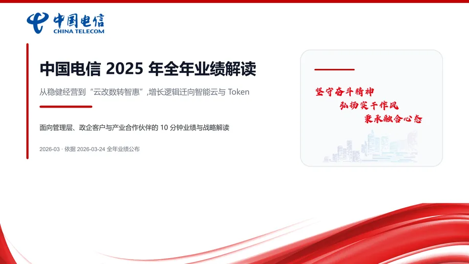

01 / BRAND
身份真值
颜色、字体、Logo、voice、icon style。它决定“这像谁”。
identityBrand、Style、Layout、Deck 是四块可以拆开、也可以拼起来的可复用工作区。先判断你想复用身份、方法、骨架还是整类演示，再选择模板，最后把精确路径交给 Generate。

它们不是四种 PPT 文件，而是四类规则包。可以单独用，也可以组合。
颜色、字体、Logo、voice、icon style。它决定“这像谁”。
identity沟通方法、页面角色、证据表达、视觉默认值、图片方向。它决定“怎么讲”。
method画布、page types、语义文字角色、slot、Master/Layout/Placeholder。它决定“怎么排”。
structure重复场景、受众、结果、叙事、身份、结构、原型。它决定“哪一类汇报”。
application选模板的起点不是“喜欢什么风”，而是“什么规则需要跨项目重复”。
如果你只需要统一品牌身份，就选一个 Brand 工作区。页面仍然自由编排，不会自动获得固定页面结构。
每个 kind 可选一个工作区，也可以留空。右侧会生成一句可直接交给 PPT Master 的请求。
当前没有选择模板工作区。PPT Master 会按内容自由设计页面。
模板选择发生在 Generate 的规划阶段。不是生成完 PPT 后再贴皮肤。
这三组对照能帮你把“感觉像模板”的说法，落到真正可执行的工作区。
“麦肯锡风”“极简风”是解释性描述，不会自动解析为本地模板工作区。
style = swiss-minimal
≠ Style workspace想保留原设计并替换内容，走 Edit Native；想建立可复用系统，先 Create Template。
source.pptx ≠ templates/最常见且稳妥的组合是 Brand + Layout：身份由 Brand 管，结构由 Layout 管。
Brand + Layout
identity + structure这是产品决策时最重要的区分：上游支持，不等于当前 UI/API 已经接入。